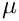

As in NOX, all parameters are passed to LOCA through parameter lists defined by the Teuchos::ParameterList class. All parameters are passed to the LOCA::Stepper class during construction. Below is a listing of all of the parameters that can be passed to the stepper with links to relevant classes that use those parameters.
Stepper Parameters
The parameter list passed to the Stepper has two sublists, "LOCA" and "NOX". The "LOCA" sublist contains parameters and sublists for the Stepper and various LOCA support classes, while the "NOX" sublist contains parameters and sublists specific to NOX solvers. The NOX sublist is passed directly to an instance of the NOX::Solver::Manager class in the Stepper and therefore has the same structure as any NOX solver parameter list hierarchy. Please see the NOX Parameter Reference page for more details on the structure of this list.
"Continuation Parameter" – [string] (Must be supplied) Name of continuation parameter
"Initial Value" – [double] (Must be supplied) Initial value of continuation parameter
"Max Value" – [double] (Must be supplied) Maximum value of continuation parameter
"Min Value" – [double] (Must be supplied) Minimum value of continuation parameter
"Max Steps" – [int] (default: 100) Maximum number of continuation steps (including failed steps)
"Max Nonlinear Iterations" – [int] (default: 15) Maximum number of nonlinear iterations per continuation step
"Skip Parameter Derivative" – [bool] (default: true) For natural continuation, skip the df/dp computation which is usually unnecessary.
"Enable Arc Length Scaling" – [bool] (default: true) Enable arc-length scaling to equilibrate solution and parameter components to arc-length equations (see LOCA::MultiContinuation::ArcLengthGroup)
"Goal Arc Length Parameter Contribution" – [double] (default: 0.5) Goal for parameter contribution to arc-length equation
"Max Arc Length Parameter Contribution" – [double] (default: 0.8) Max for parameter contribution to arc-length equation, triggering rescaling
"Initial Scale Factor" – [double] (default: 1.0) Initial scale factor for parameter term of arc-length equation
"Min Scale Factor" – [double] (default: 1.0e-3) Minimum scale factor for scaling parameter term of arc-length equation
"Enable Tangent Factor Step Size Scaling" – [bool] (default: false) Enable step size scaling by cosine between two consective tangent vectors and to continuation curve: where is the tangent factor exponent.
"Min Tangent Factor" – [double] (default: 0.1) Minumum cosine between two consecutive tangent vectors, below which the continuation step is failed
"Tangent Factor Exponent" – [double] (default: 1.0) Exponent on the cosine between two consecutive tangent vectors, which then modifies the step size
"Bordered Solver Method" – [string] (default: "Bordering") Method for solving bordered system of equations. Used by LOCA::BorderedSolver::Factory. Available choices are
"Nested" – Nested for method recursive bordered solves (LOCA::BorderedSolver::Nested). This method is appropriate when the system is itself bordered, for example, when using the minimally augmented turning point formulation or when the system has constraints. This method combines the nested bordered rows and columns and forms one large bordered system. The solver used for the resulting bordered system is specified through the "Nested Bordered Solver" sublist.
"Nested Bordered Solver" sublist – Specifies the solver for the resulting bordered system in a nested bordered system. Any valid bordered solver parameter may be used here.
"Compute Eigenvalues" – [bool] (default: false) Flag for requesting eigenvalue calculation after each continuation step
"Compute Eigenvalues On Target Step" – [bool] (default: false) Compute eigenvalues after last continuation step when attempting to hit parameter target
"Cayley Pole" – [double] (default 0.0) as defined above
"Cayley Zero" – [double] (default 0.0)  as defined above
"Block Size" – [int] (default: 1) Block size
"Num Blocks" – [int] (default: 30) Maximum number of blocks (equals the maximum length of the Arnoldi factorization)
"Num Eigenvalues" – [int] (default: 4) Number of requested eigenvalues
"Convergence Tolerance" – [double] (default: 1.0e-7) Tolerance for the converged eigenvalues
"Linear Solve Tolerance" – [double] (default: uses the same tolerance from the nonlinear solver) Tolerance for the linear solves used by the eigensolver.
"Step Size" – [int] (default: 1) Checks convergence every so many steps
"Maximum Restarts" – [int] (default: 1) Number of restarts allowed
"Symmetric" – [bool] (default: false) Is the operator symmetric
"Normalize Eigenvectors with Mass Matrix" – [bool] (default: false) Option to normalize vMv=1 instead of vv=1.
"Length Normalization Vector" – [Teuchos::RCP<NOX::Abstract::Vector>] (Must be supplied) Pointer to NOX::Abstract::Vector holding length normalization vector.
"Initial Null Vector" – [Teuchos::RCP<NOX::Abstract::Vector>] (Must be supplied) Initial guess for null vector.
"Perturb Initial Solution" – [bool] (default: false) Flag indicating whether to apply an initial perturbation to the initial guess for the solution vector before starting bifurcation algorithm
"Relative Perturbation Size" – [double] (default: 1.0e-3) Size of relative perturbation of initial guess for solution vector.
"Solver Method" – [string] (default: "Salinger Bordering") Solver method for solving extended turning point equations. Valid choices are
"Length Normalization Vector" – [Teuchos::RCP<NOX::Abstract::Vector>] (Must be supplied) Pointer to NOX::Abstract::Vector holding length normalization vector.
"Initial Null Vector" – [Teuchos::RCP<NOX::Abstract::Vector>] (Must be supplied) Initial guess for null vector.
"Asymmetric Vector" – [Teuchos::RCP<NOX::Abstract::Vector>] (Must be supplied) Pointer to NOX::Abstract::Vector holding asymmetric vector used in pitchfork algorithm.
"Perturb Initial Solution" – [bool] (default: false) Flag indicating whether to apply an initial perturbation to the initial guess for the solution vector before starting bifurcation algorithm
"Relative Perturbation Size" – [double] (default: 1.0e-3) Size of relative perturbation of initial guess for solution vector.
"Solver Method" – [string] (default: "Salinger Bordering") Solver method for solving extended turning point equations. Valid choices are
"Bordered Solver Method" – Method for solving bordered systems of equations. See description in the "Stepper" sublist above.
"Symmetric Jacobian" – [bool] (default: false) Flag indicating whether Jacobian matrix is symmetric.
"Asymmetric Vector" – [Teuchos::RCP<NOX::Abstract::Vector>] (Must be supplied) Pointer to NOX::Abstract::Vector holding asymmetric vector used in pitchfork algorithm.
"Initial Null Vector Compuation" – [string] (default: "User Provided") - Method to compute initial and vectors. Valid choices are:
"User Provided" - Initial vectors are provided in the parameter list, in which case the following parameters are relevant:
"Initial A Vector" – [Teuchos::RCP<NOX::Abstract::Vector>] (Must be supplied) Vector storing initial value for vector
"Initial B Vector" – [Teuchos::RCP<NOX::Abstract::Vector>] (Must be supplied for nonsymmetric Jacobians) Vector storing initial value for vector
"Solve df/dp" – Compute and where is the bifurcation parameter.
"Update Null Vectors Every Continuation Step" – [bool] (default: true) Flag indicating whether to update and vectors continuation step
"Update Null Vectors Every Nonlinear Iteration" – [bool] (default: false) Flag indicating whether to update and vectors every nonlinear iteration
"Hopf" – Hopf bifurcations
"Formulation" – Name of the bifurcation formulation. Valid choices are
"Length Normalization Vector" – [Teuchos::RCP<NOX::Abstract::Vector>] (Must be supplied) Pointer to NOX::Abstract::Vector holding length normalization vector.
"Initial Real Eigenvector" – [Teuchos::RCP<NOX::Abstract::Vector>] (Must be supplied) Initial guess for real component of generalized eigenvector in Hopf algorithm
"Initial Imaginary Eigenvector" – [Teuchos::RCP<NOX::Abstract::Vector>] (Must be supplied) Initial guess for imaginary component of generalized eigenvector in Hopf algorithm
"Initial Frequency" – [double] (Must be supplied) Initial guess for Hopf frequency in Hopf algorithm
"Perturb Initial Solution" – [bool] (default: false) Flag indicating whether to apply an initial perturbation to the initial guess for the solution vector before starting bifurcation algorithm
"Relative Perturbation Size" – [double] (default: 1.0e-3) Size of relative perturbation of initial guess for solution vector.
"Solver Method" – [string] (default: "Salinger Bordering") Solver method for solving extended turning point equations. Valid choices are
"User-Defined" User defined bifurcation. Set "User-Defined Name" to be the parameter list name containing user-defined strategy, which must be of type Teuchos::RCP<LOCA::MultiContinuation::AbstractGroup>.
"Predictor" sublist – used by LOCA::MultiPredictor::Factory to determine what type of predictor to use for each continuation step
"Method" – [string] (default: "Secant") Predictor method to use for computing the initial guess for each continuation step. Choices are
"Random" – Use a random perturbation of previous solution to compute initial guess (LOCA::MultiPredictor::Random)
"Epsilon" – [double] (default: 1.0e-3) Relative size of perturbation for random predictor
"First Step Predictor" sublist – used by the secant predictor to determine which predictor to use for the first continuation step – Replicates "Predictor" sublist structure
"Last Step Predictor" sublist – Predictor to use for last step of arc-length continuation to hit target (max or min) value exactly (usually "Constant" or "Random") – Replicates "Predictor" sublist structure
"Step Size" sublist – used by LOCA::StepSize::Factory to determine step size constrol strategies
"Method" – [string] (default: "Adaptive") Step size control strategy to use. Choices are
"Constant" – Use a constant step size in general, reducing the step size after a failure and increasing step size back up to original value after subsequent successes (see LOCA::StepSize::Constant)
"Adaptive" – Use an adaptive step size control strategy that adjusts step size according to the number of Newton iterations per step (see LOCA::StepSize::Adaptive)
"Failed Step Reduction Factor" – [double] (default: 0.5) Factor by which step size is reduced after a failed step
"Successful Step Increase Factor" - [double] (default: 1.26) Factor by which step size is increased after a successful step when the step size is smaller than the initial step size (Constant step size method only).
"Constraints" sublist – Used to provide additional constraint equations.
"Constraint Object" – [Teuchos::RCP<LOCA::MultiContinuation::ConstraintInterface>] (Must be supplied) Pointer to object implementig constraint interface LOCA::MultiContinuation::ConstraintInterface.
"Constraint Parameter Names" – [Teuchos::RCP< std::vector<std::string> >] (Must be supplied) Pointer to vector of std::string names of parameters that become additional unkowns for solving constrained system.
"Bordered Solver Method" – Method for solving bordered systems of equations arising from constraints. See description in the "Stepper" sublist above.
User-Defined Strategies Through Parameter Lists
Most strategy choices above have another available option that is not listed above for providing user-defined strategies. To use a user-defined strategy, one must implement the corresponding strategy abstract interface (e.g., LOCA::MultiPredictor::AbstractStrategy) and instantiate an object of the user-defined type. Then set the corrsponding "Method" (or similar) parameter of the relevant sublist to "User-Defined", set the parameter "User-Defined Name" to the parameter list name of the strategy (e.g., "My Predictor"), and set the parameter with that name to be a ref-count pointer to that object with the type of the abstract strategy interface (e.g., Teuchos::RCP<LOCA::MultiPredictor::AbstractStrategy>).
User-Defined Strategies Through Factories
Another option is available for providing user-defined strategies by implementing a factory to instantiate these strategies. This option is most appropriate when multiple user-defined strategies are available, and the user wishes to control which strategy is instantiated through parameter lists. This is often used when providing strategies that are specific to the underlying NOX group, for example the Epetra and LAPACK factories described below. In this case one imlements the LOCA::Abstract::Factory by defining the relevant strategy creation methods and then passes a ref-count pointer to this factory in the LOCA::createGlobalData() call. Then the user can select these strategies just as if they were built in to LOCA.
"Include UV In Preconditioner" – [bool] (default: false) Flag indicating whether to use the and terms in the preconditioner for
"Use P For Preconditioner" – [bool] (default: false) Flag indicating whether to use the representation of as a LOCA::Epetra::LowRankUpdateRowMatrix for computing the preconditioner. This is valid only for preconditioners that accept an Epetra_RowMatrix interface.
"Transpose Solver Method" – [string] (default: "Transpose Preconditioner") Method for preconditioning the transpose linear system (LOCA::Epetra::TransposeLinearSystem::Factory). Available choices are:
"Transpose Preconditioner" – Use the transpose of the preconditioner for the original system.
"Left Preconditioning" – Use the transpose of the preconditioner, and apply using left preconditioning.
"Explicit Transpose" – Form the transpose of the matrix and compute the preconditioner. This method is available only if Trilinos is configured with EpetraExt support (–enable-epetraext).
"Preconditioner Method" – [string] (default: "Jacobian") - Method for preconditioning the operator. Choices are:
"Jacobian" (default) – Use the preconditioner for
"SMW" – Use the Sherman-Morrison-Woodbury formula for the inverse of , replacing the inverse of with the preconditioner for .
"Scale Augmented Rows" – [bool] (default: true) - Scale augmented rows to unit 2-norm before computing QR factorization.
"DGGEV" – Use LAPACK's generalized eigenvalue solver DGGEV
"Num Eigenvalues" – [int] (default: 4) Number of eigenvalues to print
"Sorting Order" – [string] (default: "LM") Sorting order of printed eigenvalues. Used by LOCA::EigenvalueSort::Factory. See Eigensolver sublist above for a list of available options.